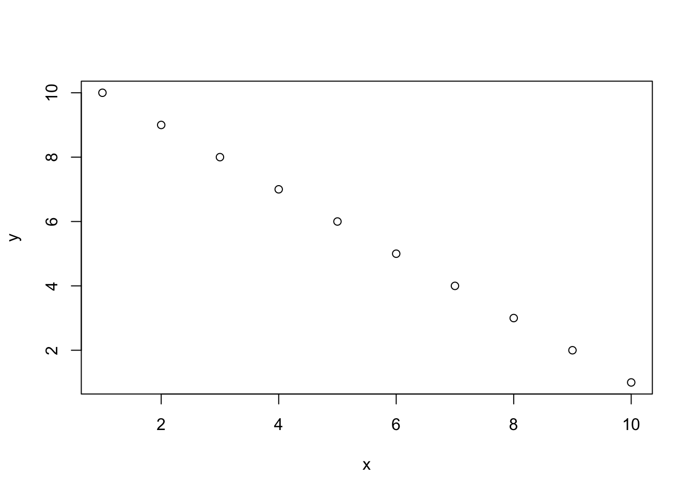
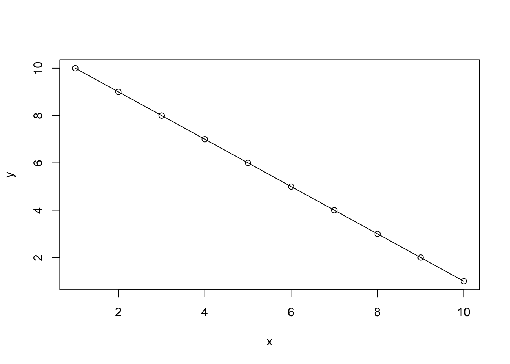
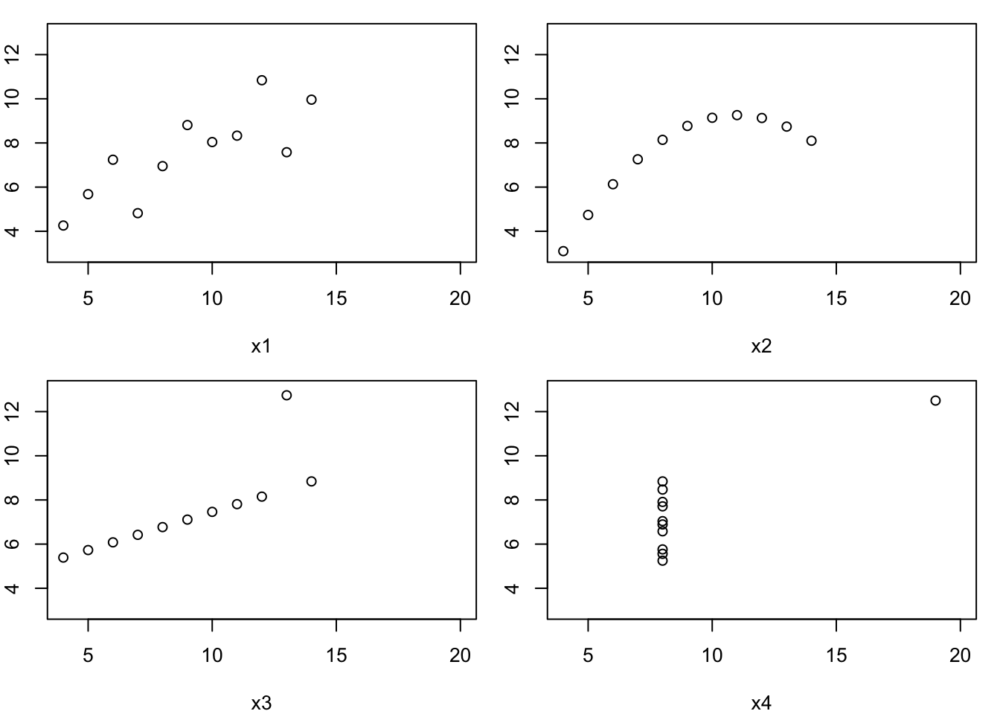
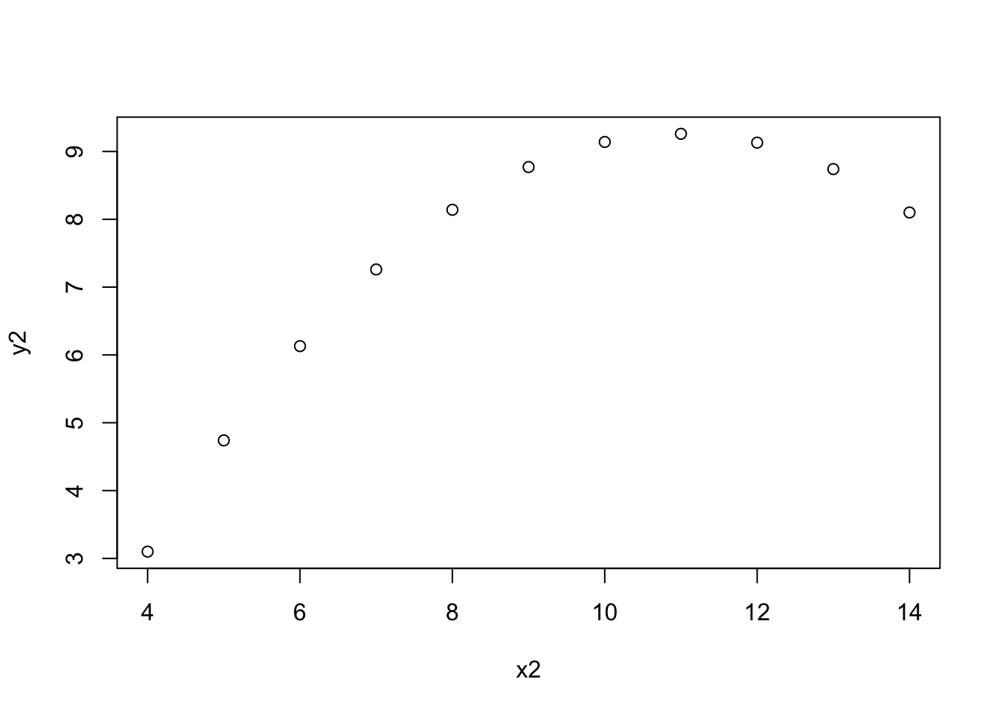

doub = function(x) 2*x
doub(5)[1] 10This problem set addresses basic operations in R.
If you use AI to help solve any problem, please provide information on 1) the model in use, 2) the prompt used to get help, 3) some comments on what you learned from the encounter.
Solutions to this problem set should be submitted as quarto documents. Place the required file in your bst260 repository in folder “solutions” as “pset02.qmd” Use the title “BST 260 Problem set 2: Basics and polynomials”. Put your name as author.
All actions in R occur with evaluation of functions.
Functions in R consist of a name, a body, and arguments. To create a function of one argument x that doubles its input, we can write
doub = function(x) 2*x
doub(5)[1] 10Function calls can in certain cases be successfully composed.
doub(doub(5))[1] 20An ordered collection of entities of a common type (typically numeric, character, or logical) is referred to as a “vector”. This is the simplest form of data in R.
Vectors have “types”. The most important types are numeric, character, logical, and factor.
We will focus on numeric vectors in early problem sets.
A good overview of vectors and data types is here; see also the course textbook.
One way to create a vector is to use the c function, shorthand for “combine”.
Another way is with the seq function. The most commonly used arguments to seq are from, to, and by.
Exercise 1. Explain the result of evaluating: all.equal(c(1,2,3), seq(1,3,1))
Exercise 2. What is the length of the vector produced with seq(1,100,.5)? Show your code.
Arithmetic operations on vectors yield new vectors.
c(1,2,3) + c(3,2,1)[1] 4 4 4So do logical operations:
c(1,2,3) > c(3,2,1)[1] FALSE FALSE TRUEWhen a binary operation (arithmetic or logical) is performed on two vectors of unequal lengths, the shorter is “replicated” to the length of the longer.
c(1,2,3) * 10[1] 10 20 30We could say that this operation proceeded by copying 10 three times and then doing element-wise multiplication.
Exercise 3. Explain the result. What is its type?
c(3,4,5,6) > 4[1] FALSE FALSE TRUE TRUEBase R graphics are very simple and we will start with very simple approaches, focusing on scatterplots. For equal-length numeric vectors x and y, plot(x,y) produces a plot of y against x.
x = seq(1,10,1)
y = seq(10,1,-1)
plot(x,y)
We can enhance an existing plot. For example, we can draw a line through the points produced above.
plot(x,y)
lines(x,y)
We can control margin size or graphic layout with par, as seen below.
The anscombe dataset provided in R originates from a 1973 paper.
We will come back to this dataset for various purposes. Here we have some inelegant plotting code.
par(mfrow=c(2,2), mar=c(4,2,1,1))
with(anscombe, plot(x1,y1,xlim=c(4,20), ylim=c(3,13)))
with(anscombe, plot(x2,y2,xlim=c(4,20), ylim=c(3,13)))
with(anscombe, plot(x3,y3,xlim=c(4,20), ylim=c(3,13)))
with(anscombe, plot(x4,y4,xlim=c(4,20), ylim=c(3,13)))
Exercise 4. Add a section heading # Anscombe plots and place the code chunk seen above in that section.
Exercise 5. Add text after the plots that describes in words the purpose of the xlim and ylim settings.
Exercise 6. We will now explore the role of polynomial functions in describing patterns seen in scatterplots.
Markdown setup
Add a new subsection heading ## A polynomial function to model the Anscombe x2:y2 data
Define, in an r code chunk, the function q1 = function(x) -7 + 2.78*x -.127*x*x
Use the following commands to produce a fresh plot of the anscombe x2, y2 vectors.
par(mfrow=c(1,1))
with(anscombe, plot(x2,y2))
Expand this chunk of code:
Produce a new vector of “x values” newx = seq(4,14,.1)
Use the lines command to add newx and q1(newx) to the x2:y2 plot
Define a function q2 similar to q1, for which the line traced by the values (newx, q2(newx)) “go through” the x2:y2 points.
Give a mathematical explanation of the “defect” of q1 in “fitting” the x2:y2 pattern. Describe how you “repaired” the defect.